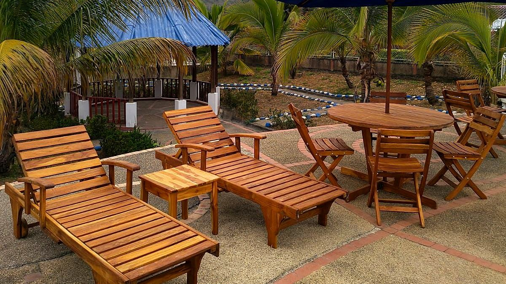

Qué llevar a un fin de semana en clima cálido cerca de Bogotá
Sol y piscina de día, fresco al caer la tarde. Con esta lista empacas lo justo para disfrutar Tena sin cargar de más.
Lectura de 6 minHotel Cabaleón
Uno de los placeres de escaparse de Bogotá a tierra caliente es cambiar el abrigo por ropa ligera. Pero el clima de montaña tiene sus matices: el día es cálido y la tarde refresca. Esta es la lista que recomendamos a nuestros huéspedes.
Cómo es el clima en Hotel Cabaleón
El hotel está en la vereda Escalante de Tena, Cundinamarca, a unas dos horas de Bogotá. Durante el día la temperatura está entre 24 °C y 28 °C, ideal para la piscina, y al caer la tarde el ambiente se vuelve fresco. Por eso conviene empacar en capas: ropa ligera para el día y algo abrigado para la noche.
Para la piscina y el sol
- Vestido de baño (si te quedas varios días, mejor llevar dos).
- Toalla para la piscina.
- Bloqueador solar, gorra y gafas de sol.
- Repelente: estamos rodeados de jardines y naturaleza.
Las piscinas abren de 8:00 a. m. a 5:30 p. m. La piscina para adultos tiene de 90 a 170 cm de profundidad y la infantil, 60 cm. También puedes reservar tu momento de bienestar en los turnos del día:
| Zona | Horario |
|---|---|
| Piscinas | 8:00 a. m. – 5:30 p. m. |
| Sauna (seco, 80 a 90 °C) | 10:00 – 10:30 a. m. |
| Jacuzzi | 10:30 – 11:00 a. m. y 4:30 – 5:00 p. m. |
| Baño turco (vapor, 50 a 70 °C) | 4:00 – 4:30 p. m. |
| Mini tejo | 9:00 a. m. – 5:30 p. m. |
Ropa para el día y para la noche
- Ropa ligera y fresca para el día: camisetas, pantalonetas, vestidos de algodón o lino.
- Un saco o una chaqueta liviana para la tarde y la noche, cuando refresca.
- Calzado cómodo si piensas caminar por la zona, y sandalias para la piscina.
- Ropa deportiva si quieres usar el gimnasio o jugar en la cancha polideportiva.
Qué llevar según tu plan
Escapada romántica
Además de lo básico para la piscina, empaca algo especial para la cena para dos en el Restaurante Mangolé, que se sirve de 6:00 a 7:30 p. m., y ropa cómoda para disfrutar el jacuzzi, el sauna y el turco.
Fin de semana en familia
Ropa de cambio para los niños, ropa deportiva para la cancha polideportiva y para los juegos de mini tejo, rana, billar y ping pong, y meriendas para los más pequeños entre comidas.
Pasadía
Si vienes solo por el día, basta con una mochila: vestido de baño, toalla para la piscina, protector solar, gorra y una muda de ropa seca para el regreso. Te contamos todo sobre el pasadía cerca de Bogotá.
Para el sauna, el turco y el jacuzzi
La zona de bienestar es uno de los momentos favoritos de nuestros huéspedes. El sauna es seco, de 80 a 90 °C; el baño turco es de vapor, de 50 a 70 °C, y el jacuzzi está en la piscina principal. Para disfrutarlos lleva vestido de baño, una toalla adicional y una botella de agua para hidratarte entre una sesión y otra.
Si viajas con niños
Cabaleón recibe familias: hay piscina infantil y la Habitación Familiar Cuádruple es para cuatro personas. Lleva flotadores o juguetes de piscina si los usan, ropa de cambio y su protector solar. Recuerda que los menores de 12 años deben estar siempre acompañados de un adulto en la piscina, y cuéntanos sus edades al reservar para organizar las camas.
Si viajas con tu mascota
Somos Pet Friendly en habitaciones seleccionadas, previa reserva y según disponibilidad, por $70.000 COP por mascota por noche. Nosotros ponemos colchoneta, recipientes para agua y alimento y bolsas para desechos. Tú lleva:
- El carné de vacunas al día.
- Correa o guacal para las zonas comunes.
- Su alimento y sus premios de siempre.
Las mascotas no ingresan a la piscina, al restaurante ni a las camas, y al llegar se firma el Acuerdo de responsabilidad Pet Friendly.
Lo que no tienes que empacar
Viaja liviano: esto ya lo tienes en el hotel.
- Ropa de cama y toallas de baño.
- Desayuno todas las mañanas, de 8:00 a 10:00 a. m., incluido en la tarifa.
- Wifi gratuito y parqueadero gratuito.
- Aire acondicionado, televisión de alta definición, cajilla de seguridad y clóset amplio en todas las habitaciones.
- Baño privado con ducha.
Para almorzar o cenar, el Restaurante Mangolé y Cabalante Bar, junto a la piscina, te esperan; esos consumos se pagan aparte.
Botiquín básico
Cabaleón está en zona rural y el centro de salud más cercano queda a unos 45 minutos, así que conviene llevar un pequeño botiquín: tus medicamentos personales, algo para el dolor de cabeza o el malestar estomacal, curitas, crema para picaduras y, si los usas, antialérgicos. Si alguien del grupo tiene una condición especial o una restricción alimentaria, cuéntanoslo al reservar.
Lista rápida para tu maleta
- Vestido de baño y toalla para la piscina.
- Bloqueador solar, gorra, gafas de sol y repelente.
- Ropa ligera para temperaturas de 24 °C a 28 °C.
- Saco o chaqueta liviana para la noche.
- Calzado cómodo y sandalias.
- Medicamentos personales (estamos en zona rural).
- Para la mascota: carné de vacunas, correa o guacal y su comida.
¿Aún no tienes la ruta clara? Revisa cómo llegar a Tena desde Bogotá.
Tu descanso comienza aquí
Elige fechas y habitaciones en nuestra página: ves tu factura al instante, con impuestos y desayuno incluidos, y confirmas con el anticipo del 50 % o el pago total. Directo con el hotel, sin intermediarios.
Preguntas frecuentes
¿Qué temperatura hace en Hotel Cabaleón?
Durante el día, entre 24 °C y 28 °C; al caer la tarde el ambiente es fresco, por eso recomendamos llevar un saco liviano.
¿El hotel da toallas?
Sí, la ropa de cama y las toallas de baño las ponemos nosotros. Para la piscina, te recomendamos llevar tu propia toalla.
¿Puedo llevar a mi mascota?
Sí. Somos Pet Friendly en habitaciones seleccionadas, previa reserva, por $70.000 COP por mascota por noche. Debe tener vacunas al día y no puede ingresar a la piscina, al restaurante ni a las camas.
¿A qué hora abre la piscina?
Las piscinas abren de 8:00 a. m. a 5:30 p. m. Los menores de 12 años deben estar siempre con un adulto.
¿Necesito llevar comida?
No es necesario: el desayuno está incluido y el Restaurante Mangolé sirve almuerzo de 12:30 a 3:00 p. m. y cena de 6:00 a 7:30 p. m. Cabalante Bar y el Snack-bar Mango Vista ofrecen bebidas y snacks; esos consumos se pagan aparte.
Equipo de Hotel CabaleónComplejo turístico campestre en Tena, Cundinamarca. Publicado el .